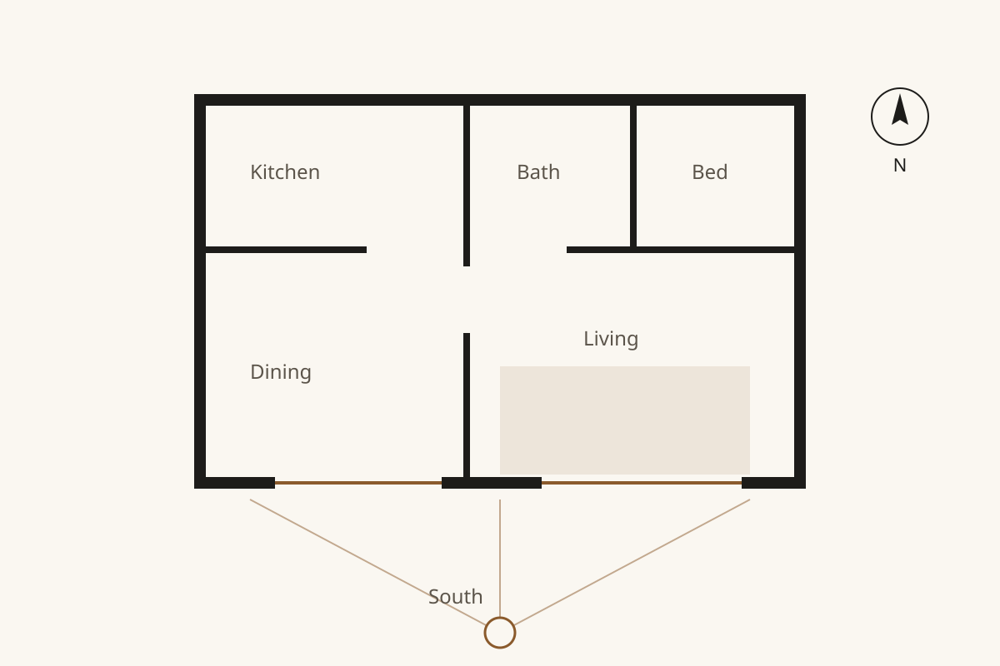
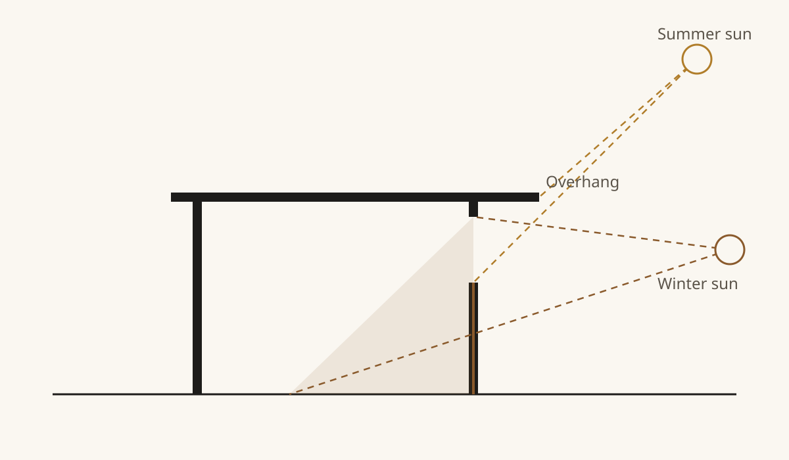

On the first visit to a new site, before we talk about rooms or budgets, we stand on the plot at different times of the day and watch where the light falls. It is the cheapest decision in the whole project and the one you will notice every morning for the next forty years.
In most places the best light comes from the south in winter and from the east in the morning. So the rooms where you spend your days, the kitchen, the dining table and the living room, go on that side. Bedrooms, stairs, bathrooms and storage can sit to the north, where steady, cool light is all they need.

It sounds obvious, but many houses are planned the other way round, because the street or the view is on the north side. When that happens, we look for a way to bring light in from above: a roof light over the stair, a high window or a light well.
The sun is low in winter and high in summer. A roof overhang or a balcony of the right depth uses this difference: it shades the windows when the sun is high and lets the low winter sun reach deep into the room.

Done well, this keeps the house cooler in July and warmer in January, with no moving parts and nothing to maintain.
You do not need a new house to get more from daylight:
If you would like us to look at the light in your own home, get in touch. It is usually the first thing we talk about.